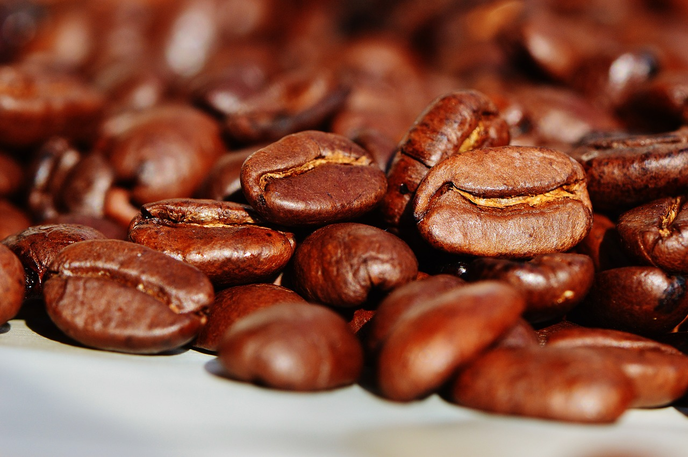

What is coffee?
Coffee is a drink made from roasted coffee beans, which comes from the berries of Coffee plant. The origin of coffee plants are from Africa, Ethiopia and Madagascar, the Comoros, Mauritius, Sudan. The plant are exported from Africa to countries around the globe. It is then enjoyed and prepare according to different traditions and cultures. It's most popular in drinking form. other uses can be found in recipes, medicine and in pure extracts.